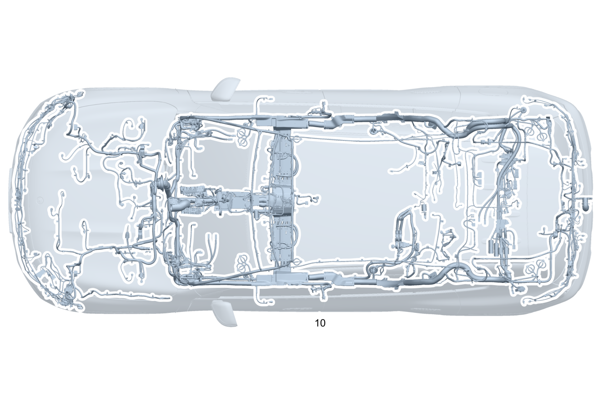

| № | Артикул | Название | Кол. | Примечание | Ограничение |
|---|---|---|---|---|---|
| 10 | A 248 540 28 06 | Электрический жгут | 1 | Основной жгут электропроводки системы рамы и пола [-] В жгуте проводов предусмотрена возможность подключения соответствующих дополнительных опций согласно производственному номеру а/м [-] При заказе указать идент. номер | |
| 10 | A 174 540 98 32 | Электрический жгут (ELECTRICAL WIRING HARNESS) | 1 | Основной жгут электропроводки системы рамы и пола [-] В жгуте проводов предусмотрена возможность подключения соответствующих дополнительных опций согласно производственному номеру а/м [-] При заказе указать идент. номер | 700 |
| 20 | A 244 540 54 16 | - Электрический жгут | 1 | Тягово\-сцепное устройство Рулевое управление: Влево | 550 |
| 20 | A 244 540 55 16 | - Электрический жгут | 1 | Тягово\-сцепное устройство Рулевое управление: Вправо | 550 |
| 20 | A 244 540 61 28 | - Электрический жгут (ELECTRICAL WIRING HARNESS) | 1 | Тягово\-сцепное устройство Рулевое управление: Влево | (807/808/29X)+550 |
| 20 | A 244 540 61 28 | - Электрический жгут (ELECTRICAL WIRING HARNESS) | 1 | Тягово\-сцепное устройство Рулевое управление: Влево | (807)+550 |
| 20 | A 244 540 61 28 | - Электрический жгут (ELECTRICAL WIRING HARNESS) | 1 | Тягово\-сцепное устройство Рулевое управление: Влево | 550 |
| 20 | A 244 540 62 28 | - Электрический жгут (ELECTRICAL WIRING HARNESS) | 1 | Тягово\-сцепное устройство Рулевое управление: Вправо | (807)+550 |
| 20 | A 244 540 62 28 | - Электрический жгут (ELECTRICAL WIRING HARNESS) | 1 | Тягово\-сцепное устройство Рулевое управление: Вправо | 550 |
| 20 | A 244 540 24 34 | - Электрический жгут | 1 | Тягово\-сцепное устройство Рулевое управление: Влево | 550+807+057 |
| 20 | A 244 540 24 34 | - Электрический жгут | 1 | Тягово\-сцепное устройство Рулевое управление: Влево | 550 |
| 20 | A 244 540 25 34 | - Электрический жгут | 1 | Тягово\-сцепное устройство Рулевое управление: Вправо | 550+807+057 |
| 20 | A 244 540 25 34 | - Электрический жгут | 1 | Тягово\-сцепное устройство Рулевое управление: Вправо | 550 |
| 30 | A 244 540 99 08 | - Электрический жгут | 1 | Бесконтактный доступ Рулевое управление: Влево | 871 |
| 30 | A 244 540 72 08 | - Электрический жгут | 1 | Бесконтактный доступ Рулевое управление: Вправо | 871 |
| 40 | A 174 540 96 21 | - Электрический жгут (ELECTRICAL WIRING HARNESS) | 1 | Adapter Electric Drivetrain | |
| 50 | A 244 540 10 19 | - Электрический жгут | 1 | Боковая подушка безопасности (задняя) Рулевое управление: Влево | 293 |
| 50 | A 244 540 11 19 | - Электрический жгут | 1 | Боковая подушка безопасности (задняя) Рулевое управление: Вправо | 293 |
| 50 | A 244 540 15 35 | - Электрический жгут | 1 | Боковая подушка безопасности (задняя) Рулевое управление: Влево | 293+(807+057/808/29X) |
| 50 | A 244 540 15 35 | - Электрический жгут | 1 | Боковая подушка безопасности (задняя) Рулевое управление: Влево | 293 |
| 50 | A 244 540 16 35 | - Электрический жгут | 1 | Боковая подушка безопасности (задняя) Рулевое управление: Вправо | 293+(807+057/808/29X) |
| 50 | A 244 540 16 35 | - Электрический жгут | 1 | Боковая подушка безопасности (задняя) Рулевое управление: Вправо | 293 |
| 60 | A 244 540 92 18 | - Электрический жгут | 1 | Система распознавания занятости сиденья Сиденья в задней части салона Рулевое управление: Влево | U23 |
| 60 | A 244 540 94 18 | - Электрический жгут | 1 | Система распознавания занятости сиденья Сиденья в задней части салона Рулевое управление: Вправо | U23 |
| 60 | A 244 540 68 34 | - Электрический жгут | 1 | Система распознавания занятости сиденья Сиденья в задней части салона Рулевое управление: Влево | U23+(807+057/808/29X) |
| 60 | A 244 540 68 34 | - Электрический жгут | 1 | Система распознавания занятости сиденья Сиденья в задней части салона Рулевое управление: Влево | U23 |
| 60 | A 244 540 69 34 | - Электрический жгут | 1 | Система распознавания занятости сиденья Сиденья в задней части салона Рулевое управление: Вправо | U23+(807+057/808/29X) |
| 60 | A 244 540 69 34 | - Электрический жгут | 1 | Система распознавания занятости сиденья Сиденья в задней части салона Рулевое управление: Вправо | U23 |
| 70 | A 244 540 71 04 | - Электрический жгут | 1 | активный капот Рулевое управление: Влево | |
| 70 | A 244 540 72 04 | - Электрический жгут | 1 | активный капот Рулевое управление: Вправо | |
| 80 | A 244 540 83 08 | - Электрический жгут | 1 | Системы отопления и охлаждения Рулевое управление: Влево | |
| 80 | A 244 540 84 08 | - Электрический жгут | 1 | Системы отопления и охлаждения Рулевое управление: Вправо | |
| 90 | A 244 540 26 19 | - Электрический жгут | 1 | Заднее многоместное сиденье "Vario" Рулевое управление: Влево | 847 |
| 90 | A 244 540 27 19 | - Электрический жгут | 1 | Заднее многоместное сиденье "Vario" Рулевое управление: Вправо | 847 |
| 90 | A 244 540 16 19 | - Электрический жгут | 1 | Индикация состояния системы распознавания занятости сиденья и ремней безопасности в задней части салона Рулевое управление: Влево | (567/847)+U23 |
| 90 | A 244 540 17 19 | - Электрический жгут | 1 | Индикация состояния системы распознавания занятости сиденья и ремней безопасности в задней части салона Рулевое управление: Вправо | (567/847)+U23 |
| 90 | A 244 540 54 34 | - Электрический жгут | 1 | Индикация состояния системы распознавания занятости сиденья и ремней безопасности в задней части салона Рулевое управление: Влево | ((567/847)+U23)+(807+057/808/29X) |
| 90 | A 244 540 54 34 | - Электрический жгут | 1 | Индикация состояния системы распознавания занятости сиденья и ремней безопасности в задней части салона Рулевое управление: Влево | ((567/847)+U23) |
| 90 | A 244 540 55 34 | - Электрический жгут | 1 | Индикация состояния системы распознавания занятости сиденья и ремней безопасности в задней части салона Рулевое управление: Вправо | ((567/847)+U23)+(807+057/808/29X) |
| 90 | A 244 540 55 34 | - Электрический жгут | 1 | Индикация состояния системы распознавания занятости сиденья и ремней безопасности в задней части салона Рулевое управление: Вправо | ((567/847)+U23) |
| 100 | A 244 540 41 07 | - Электрический жгут | 1 | Беспроводной мобильный интерфейс Рулевое управление: Влево | 897 |
| 100 | A 244 540 42 07 | - Электрический жгут | 1 | Беспроводной мобильный интерфейс Рулевое управление: Вправо | 897 |
| 100 | A 244 540 83 28 | - Электрический жгут | 1 | Беспроводной мобильный интерфейс Рулевое управление: Вправо | (807/808/29X)+897 |
| 100 | A 244 540 83 28 | - Электрический жгут | 1 | Беспроводной мобильный интерфейс Рулевое управление: Вправо | 897 |
| 110 | A 244 540 89 08 | - Электрический жгут | 1 | Нагревательные устройства передних сидений Рулевое управление: Влево | 873 |
| 110 | A 244 540 90 08 | - Электрический жгут | 1 | Нагревательные устройства передних сидений Рулевое управление: Вправо | 873 |
| 110 | A 244 540 91 08 | - Электрический жгут | 1 | Нагревательные устройства передних сидений Рулевое управление: Влево | 873+890 |
| 110 | A 244 540 92 08 | - Электрический жгут | 1 | Нагревательные устройства передних сидений Рулевое управление: Вправо | 873+890 |
| 120 | A 244 540 75 07 | - Электрический жгут | 1 | Отключение звука системы экстренного вызова Рулевое управление: Влево | 370 |
| 120 | A 244 540 76 07 | - Электрический жгут | 1 | Отключение звука системы экстренного вызова Рулевое управление: Вправо | 370 |
| 120 | A 244 540 77 07 | - Электрический жгут | 1 | Отключение звука системы экстренного вызова Рулевое управление: Влево | 370+810 |
| 120 | A 244 540 78 07 | - Электрический жгут | 1 | Отключение звука системы экстренного вызова Рулевое управление: Вправо | 370+810 |
| 140 | A 244 540 81 07 | - Электрический жгут | 1 | Радарный датчик Рулевое управление: Влево | 3B9 |
| 140 | A 244 540 82 07 | - Электрический жгут | 1 | Радарный датчик Рулевое управление: Вправо | 3B9 |
| 140 | A 244 540 83 07 | - Электрический жгут | 1 | Радарный датчик, Ethernet Рулевое управление: Влево | 3B9 |
| 140 | A 244 540 84 07 | - Электрический жгут | 1 | Радарный датчик, Ethernet Рулевое управление: Вправо | 3B9 |
| 160 | A 244 540 85 07 | - Электрический жгут | 1 | Блок управления вспомогательной системой Рулевое управление: Влево | 4B1 |
| 160 | A 244 540 86 07 | - Электрический жгут | 1 | Блок управления вспомогательной системой Рулевое управление: Вправо | 4B1 |
| 190 | A 244 540 87 07 | - Электрический жгут | 1 | Обогреваемая камера ультразвукового датчика Рулевое управление: Влево | |
| 190 | A 244 540 88 07 | - Электрический жгут | 1 | Обогреваемая камера ультразвукового датчика Рулевое управление: Вправо | |
| 200 | A 244 540 89 07 | - Электрический жгут | 1 | Камера с обзором 360 градусов Рулевое управление: Влево | 4B1 |
| 200 | A 244 540 90 07 | - Электрический жгут | 1 | Камера с обзором 360 градусов Рулевое управление: Вправо | 4B1 |
| 210 | A 244 540 68 09 | - Электрический жгут | 1 | Система распознавания наличия детского кресла Рулевое управление: Влево | B19 |
| 210 | A 244 540 69 09 | - Электрический жгут | 1 | Система распознавания наличия детского кресла Рулевое управление: Вправо | B19 |
| 210 | A 244 540 70 09 | - Электрический жгут | 1 | Система распознавания наличия детского кресла Рулевое управление: Влево | 398 |
| 210 | A 244 540 71 09 | - Электрический жгут | 1 | Система распознавания наличия детского кресла Рулевое управление: Вправо | 398 |
| 210 | A 244 540 88 28 | - Электрический жгут | 1 | Система распознавания наличия детского кресла Рулевое управление: Влево | (807/808/29X)+B19 |
| 210 | A 244 540 88 28 | - Электрический жгут | 1 | Система распознавания наличия детского кресла Рулевое управление: Влево | B19 |
| 210 | A 244 540 89 28 | - Электрический жгут | 1 | Система распознавания наличия детского кресла Рулевое управление: Вправо | (807/808/29X)+B19 |
| 210 | A 244 540 89 28 | - Электрический жгут | 1 | Система распознавания наличия детского кресла Рулевое управление: Вправо | B19 |
| 210 | A 244 540 72 09 | - Электрический жгут | 1 | Система распознавания наличия детского кресла Рулевое управление: Влево | 398+B19 |
| 210 | A 244 540 73 09 | - Электрический жгут | 1 | Система распознавания наличия детского кресла Рулевое управление: Вправо | 398+B19 |
| 230 | A 244 540 91 07 | - Электрический жгут | 1 | Камера заднего вида / камера с обзором 360° Рулевое управление: Влево | 4B1 |
| 230 | A 244 540 92 07 | - Электрический жгут | 1 | Камера заднего вида / камера с обзором 360° Рулевое управление: Вправо | 4B1 |
| 230 | A 244 540 63 34 | - Электрический жгут | 1 | Камера заднего вида / камера с обзором 360° Рулевое управление: Влево | 4B1+(807+057/808/29X) |
| 230 | A 244 540 63 34 | - Электрический жгут | 1 | Камера заднего вида / камера с обзором 360° Рулевое управление: Влево | 4B1 |
| 240 | A 244 540 35 25 | - Электрический жгут | 1 | Вспомогательные системы Рулевое управление: Влево | 2B5+4B1 |
| 240 | A 244 540 36 25 | - Электрический жгут | 1 | Вспомогательные системы Рулевое управление: Вправо | 2B5+4B1 |
| 240 | A 244 540 35 25 | - Электрический жгут | 1 | Вспомогательные системы Рулевое управление: Влево | (807/808/29X)+2B5 |
| 240 | A 244 540 35 25 | - Электрический жгут | 1 | Вспомогательные системы Рулевое управление: Влево | 2B5 |
| 240 | A 244 540 36 25 | - Электрический жгут | 1 | Вспомогательные системы Рулевое управление: Вправо | (807/808/29X)+2B5 |
| 240 | A 244 540 36 25 | - Электрический жгут | 1 | Вспомогательные системы Рулевое управление: Вправо | 2B5 |
| 250 | A 244 540 13 07 | - Электрический жгут | 1 | Головное устройство Рулевое управление: Влево | |
| 250 | A 244 540 14 07 | - Электрический жгут | 1 | Головное устройство Рулевое управление: Вправо | |
| 260 | A 244 540 15 07 | - Электрический жгут | 1 | Коммуникационный модуль Рулевое управление: Влево | 368/370 |
| 260 | A 244 540 16 07 | - Электрический жгут | 1 | Коммуникационный модуль Рулевое управление: Вправо | 368/370 |
| 270 | A 244 540 17 07 | - Электрический жгут | 1 | Глобальная навигационная спутниковая система (GNSS): от головного устройства к антенному модулю на крыше Рулевое управление: Влево | 368/370 |
| 270 | A 244 540 18 07 | - Электрический жгут | 1 | Глобальная навигационная спутниковая система (GNSS): от головного устройства к антенному модулю на крыше Рулевое управление: Вправо | 368/370 |
| 270 | A 244 540 21 07 | - Электрический жгут | 1 | Коммуникационный модуль Ethernet Рулевое управление: Влево | 370 |
| 270 | A 244 540 22 07 | - Электрический жгут | 1 | Коммуникационный модуль Ethernet Рулевое управление: Вправо | 370 |
| 290 | A 244 540 23 07 | - Электрический жгут | 1 | Антенный усилитель Рулевое управление: Влево | 8S5 |
| 300 | A 244 540 05 10 | - Электрический жгут | 1 | Электродвигатель стеклоочистителя сзади Рулевое управление: Влево | |
| 300 | A 244 540 06 10 | - Электрический жгут | 1 | Электродвигатель стеклоочистителя сзади Рулевое управление: Вправо | |
| 310 | A 244 540 12 19 | - Электрический жгут | 1 | Замок ремня безопасности в задней части салона Рулевое управление: Влево | (567/847)+(U01/U23) |
| 310 | A 244 540 13 19 | - Электрический жгут | 1 | Замок ремня безопасности в задней части салона Рулевое управление: Вправо | (567/847)+(U01/U23) |
| 310 | A 244 540 91 18 | - Электрический жгут | 1 | Замок ремня безопасности в задней части салона Рулевое управление: Влево | U01/U23 |
| 310 | A 244 540 93 18 | - Электрический жгут | 1 | Замок ремня безопасности в задней части салона Рулевое управление: Вправо | U01/U23 |
| 310 | A 244 540 91 09 | - Электрический жгут | 1 | Пиропатрон натяжителя ремня безопасности 3\-го ряда сидений Рулевое управление: Влево | (50B/51B/52B/53B/54B/56B/59B)+847 |
| 310 | A 244 540 91 09 | - Электрический жгут | 1 | Пиропатрон натяжителя ремня безопасности 3\-го ряда сидений Рулевое управление: Влево | (50B/51B/52B/53B/54B/56B/57B/59B)+847 |
| 310 | A 244 540 92 09 | - Электрический жгут | 1 | Пиропатрон натяжителя ремня безопасности 3\-го ряда сидений Рулевое управление: Вправо | (50B/51B/52B/53B/54B/56B/59B)+847 |
| 310 | A 244 540 12 10 | - Электрический жгут | 1 | Пиропатрон натяжителя ремня безопасности 3\-го ряда сидений Рулевое управление: Влево | (3B1/3B2/3B4/55B/58B)+847 |
| 310 | A 244 540 13 10 | - Электрический жгут | 1 | Пиропатрон натяжителя ремня безопасности 3\-го ряда сидений Рулевое управление: Вправо | (3B0/3B3/3B5)+847 |
| 320 | A 244 540 35 07 | - Электрический жгут | 1 | Проекционный дисплей X18/35 Рулевое управление: Влево | 438 |
| 320 | A 244 540 36 07 | - Электрический жгут | 1 | Проекционный дисплей X18/35 Рулевое управление: Вправо | 438 |
| 330 | A 244 540 37 07 | - Электрический жгут | 1 | Проекционный дисплей A26/17 TO X18/53 Рулевое управление: Влево | 438 |
| 330 | A 244 540 38 07 | - Электрический жгут | 1 | Проекционный дисплей A26/17 TO X18/53 Рулевое управление: Вправо | 438 |
| 330 | A 244 540 39 07 | - Электрический жгут | 1 | Центральный дисплей Рулевое управление: Влево | 860 |
| 330 | A 244 540 40 07 | - Электрический жгут | 1 | Центральный дисплей Рулевое управление: Вправо | 860 |
| 330 | A 244 540 67 07 | - Электрический жгут | 1 | Антенна WLAN/Bluetooth(R) Рулевое управление: Влево | 2S7 |
| 330 | A 244 540 68 07 | - Электрический жгут | 1 | Антенна WLAN/Bluetooth(R) Рулевое управление: Вправо | 2S7 |
| 330 | A 244 540 71 07 | - Электрический жгут | 1 | Дорожный сбор A26/17 TO X18/53 Рулевое управление: Вправо | 943 |
| 330 | A 244 540 73 07 | - Электрический жгут | 1 | Дорожный сбор A26/17 TO X18/53 Рулевое управление: Влево | 943 |
| 340 | A 244 540 93 09 | - Электрический жгут | 1 | Система распознавания занятости сиденья, третий ряд сидений Рулевое управление: Влево | 847+U23 |
| 340 | A 244 540 94 09 | - Электрический жгут | 1 | Система распознавания занятости сиденья, третий ряд сидений Рулевое управление: Вправо | 847+U23 |
| 340 | A 244 540 97 09 | - Электрический жгут | 1 | Замок ремня безопасности, третий ряд сидений Рулевое управление: Влево | 847+(U01/U23) |
| 340 | A 244 540 98 09 | - Электрический жгут | 1 | Замок ремня безопасности, третий ряд сидений Рулевое управление: Вправо | 847+(U01/U23) |
| 350 | A 244 540 45 07 | - Электрический жгут | 1 | Мультимедийная приставка, USB Рулевое управление: Влево | 72B |
| 350 | A 244 540 46 07 | - Электрический жгут | 1 | Мультимедийная приставка, USB Рулевое управление: Вправо | 72B |
| 350 | A 244 540 71 28 | - Электрический жгут | 1 | Мультимедийная приставка, USB Рулевое управление: Влево | (807/808/29X)+72B |
| 350 | A 244 540 71 28 | - Электрический жгут | 1 | Мультимедийная приставка, USB Рулевое управление: Влево | 72B |
| 350 | A 244 540 72 28 | - Электрический жгут | 1 | Мультимедийная приставка, USB Рулевое управление: Вправо | (807/808/29X)+72B |
| 350 | A 244 540 72 28 | - Электрический жгут | 1 | Мультимедийная приставка, USB Рулевое управление: Вправо | 72B |
| 360 | A 244 540 47 07 | - Электрический жгут | 1 | Динамики и акустическая система Рулевое управление: Влево | 810 |
| 360 | A 244 540 48 07 | - Электрический жгут | 1 | Динамики и акустическая система Рулевое управление: Вправо | 810 |
| 360 | A 244 540 49 07 | - Электрический жгут | 1 | Динамики и акустическая система Рулевое управление: Влево | |
| 360 | A 244 540 50 07 | - Электрический жгут | 1 | Динамики и акустическая система Рулевое управление: Вправо | |
| 370 | A 244 540 61 11 | - Электрический жгут | 1 | Сверхширокополосная антенна Рулевое управление: Влево | 7B8/896 |
| 370 | A 244 540 62 11 | - Электрический жгут | 1 | Сверхширокополосная антенна Рулевое управление: Вправо | 7B8/896 |
| 380 | A 244 540 60 07 | - Электрический жгут | 1 | Сверхширокополосная антенна STANDARD Рулевое управление: Влево | 7B8/896 |
| 380 | A 244 540 61 07 | - Электрический жгут | 1 | Сверхширокополосная антенна STANDARD Рулевое управление: Вправо | 7B8/896 |
| 390 | A 244 540 63 07 | - Электрический жгут | 1 | Антенна KEYLESS\-GO Рулевое управление: Влево | 889 |
| 390 | A 244 540 64 07 | - Электрический жгут | 1 | Антенна KEYLESS\-GO Рулевое управление: Вправо | 889 |
| 400 | A 244 540 65 07 | - Электрический жгут | 1 | Ручка двери с системой "Keyless\-Go" Рулевое управление: Влево | 889+87B |
| 400 | A 244 540 66 07 | - Электрический жгут | 1 | Ручка двери с системой "Keyless\-Go" Рулевое управление: Вправо | 889+87B |
| 430 | A 244 540 93 05 | - Электрический жгут | 1 | Рулевая колонка Рулевое управление: Влево | |
| 430 | A 244 540 94 05 | - Электрический жгут | 1 | Рулевая колонка Рулевое управление: Вправо | |
| 430 | A 244 540 70 17 | - Электрический жгут | 1 | Антенна системы взимания дорожных сборов X18/35 Рулевое управление: Вправо | 943 |
| 430 | A 244 540 69 17 | - Электрический жгут | 1 | Антенна системы взимания дорожных сборов X18/35 Рулевое управление: Влево | 943 |
| 450 | A 244 540 80 09 | - Электрический жгут | 1 | Блок управления системой подвески / демпфирования Рулевое управление: Влево | 457 |
| 450 | A 244 540 81 09 | - Электрический жгут | 1 | Блок управления системой подвески / демпфирования Рулевое управление: Вправо | 457 |
| 460 | A 244 540 30 11 | - Электрический жгут | 1 | Датчик уровня кузова Рулевое управление: Влево | |
| 460 | A 244 540 31 11 | - Электрический жгут | 1 | Датчик уровня кузова Рулевое управление: Вправо | |
| 460 | A 244 540 30 11 | - Электрический жгут | 1 | Датчик уровня кузова Рулевое управление: Влево | 807/808/29X |
| 460 | A 244 540 30 11 | - Электрический жгут | 1 | Датчик уровня кузова Рулевое управление: Влево | |
| 460 | A 244 540 31 11 | - Электрический жгут | 1 | Датчик уровня кузова Рулевое управление: Вправо | 807/808/29X |
| 460 | A 244 540 31 11 | - Электрический жгут | 1 | Датчик уровня кузова Рулевое управление: Вправо | |
| 490 | A 244 540 79 07 | - Электрический жгут | 1 | Мультимедийный модуль Рулевое управление: Влево | 72B |
| 500 | A 244 540 75 04 | - Электрический жгут | 1 | Центральная подушка безопасности Рулевое управление: Влево | 325 |
| 500 | A 244 540 76 04 | - Электрический жгут | 1 | Центральная подушка безопасности Рулевое управление: Вправо | 325 |
| 510 | A 244 540 77 04 | - Электрический жгут | 1 | Защита пешеходов Рулевое управление: Влево | U60 |
| 510 | A 244 540 78 04 | - Электрический жгут | 1 | Защита пешеходов Рулевое управление: Вправо | U60 |
| 520 | A 244 540 81 04 | - Электрический жгут | 1 | Дистанционное закрывание крышки багажника Рулевое управление: Влево | 890 |
| 520 | A 244 540 82 04 | - Электрический жгут | 1 | Дистанционное закрывание крышки багажника Рулевое управление: Вправо | 890 |
| 520 | A 244 540 56 34 | - Электрический жгут | 1 | Дистанционное закрывание крышки багажника Рулевое управление: Влево | 890+(807+057/808/29X) |
| 520 | A 244 540 56 34 | - Электрический жгут | 1 | Дистанционное закрывание крышки багажника Рулевое управление: Влево | 890+807+057 |
| 520 | A 244 540 56 34 | - Электрический жгут | 1 | Дистанционное закрывание крышки багажника Рулевое управление: Влево | 890 |
| 520 | A 244 540 57 34 | - Электрический жгут | 1 | Дистанционное закрывание крышки багажника Рулевое управление: Вправо | 890+807+057 |
| 520 | A 244 540 57 34 | - Электрический жгут | 1 | Дистанционное закрывание крышки багажника Рулевое управление: Вправо | 890 |
| 530 | A 244 540 22 19 | - Электрический жгут | 1 | Крышка багажника Рулевое управление: Влево | |
| 530 | A 244 540 23 19 | - Электрический жгут | 1 | Крышка багажника Рулевое управление: Вправо | |
| 540 | Q 000000000002 | - Возможен заказ только отдельных компонентов жгута проводов | 1 | Тягово\-сцепное устройство Рулевое управление: Влево | 550 |
| 540 | A 244 540 88 04 | - Электрический жгут | 1 | Тягово\-сцепное устройство Рулевое управление: Вправо | 550 |
| 550 | A 244 540 24 19 | - Электрический жгут | 1 | Система распознавания занятости сиденья Сиденья в задней части салона Рулевое управление: Влево | U23 |
| 550 | A 244 540 25 19 | - Электрический жгут | 1 | Система распознавания занятости сиденья Сиденья в задней части салона Рулевое управление: Вправо | U23 |
| 560 | A 244 540 99 04 | - Электрический жгут | 1 | Ремень безопасности сиденья водителя Рулевое управление: Влево | 5S4 |
| 560 | A 244 540 00 05 | - Электрический жгут | 1 | Ремень безопасности сиденья водителя Рулевое управление: Вправо | 5S4 |
| 560 | A 244 540 01 05 | - Электрический жгут | 1 | Ремень безопасности сиденья водителя Рулевое управление: Влево | |
| 560 | A 244 540 02 05 | - Электрический жгут | 1 | Ремень безопасности сиденья водителя Рулевое управление: Вправо | |
| 560 | A 244 540 03 05 | - Электрический жгут | 1 | Сиденье рядом с водителем Рулевое управление: Влево | 0S9 |
| 560 | A 244 540 04 05 | - Электрический жгут | 1 | Сиденье рядом с водителем Рулевое управление: Вправо | 0S9 |
| 560 | A 244 540 05 05 | - Электрический жгут | 1 | Сиденье рядом с водителем Рулевое управление: Влево | |
| 560 | A 244 540 06 05 | - Электрический жгут | 1 | Сиденье рядом с водителем Рулевое управление: Вправо | |
| 560 | A 244 540 13 05 | - Электрический жгут | 1 | Натяжитель ремня безопасности Рулевое управление: Вправо | 3B5/50B/51B |
| 560 | A 244 540 28 19 | - Электрический жгут | 1 | Индикация статуса заднего ремня безопасности Рулевое управление: Влево | U01 |
| 560 | A 244 540 29 19 | - Электрический жгут | 1 | Индикация статуса заднего ремня безопасности Рулевое управление: Вправо | U01 |
| 570 | A 244 540 32 06 | - Электрический жгут | 1 | Преобразователь напряжения постоянного тока Рулевое управление: Влево | 83B |
| 570 | A 244 540 33 06 | - Электрический жгут | 1 | Преобразователь напряжения постоянного тока Рулевое управление: Вправо | 83B |
| 600 | A 244 540 37 05 | - Электрический жгут | 1 | Датчик уровня Рулевое управление: Влево | |
| 600 | A 244 540 38 05 | - Электрический жгут | 1 | Датчик уровня Рулевое управление: Вправо | |
| 610 | A 244 540 46 05 | - Электрический жгут | 1 | Ведущий процессор в салоне Рулевое управление: Влево | |
| 610 | A 244 540 47 05 | - Электрический жгут | 1 | Ведущий процессор в салоне Рулевое управление: Вправо | |
| 620 | A 244 540 09 12 | - Электрический жгут | 1 | Система управления энергоснабжением, шина данных CAN Рулевое управление: Влево | |
| 620 | A 244 540 10 12 | - Электрический жгут | 1 | Система управления энергоснабжением, шина данных CAN Рулевое управление: Вправо | |
| 630 | A 244 540 11 12 | - Электрический жгут | 1 | Система управления энергоснабжением, шина данных CAN Рулевое управление: Влево | |
| 630 | A 244 540 12 12 | - Электрический жгут | 1 | Система управления энергоснабжением, шина данных CAN Рулевое управление: Вправо | |
| 640 | A 244 540 56 05 | - Электрический жгут | 1 | Пиропредохранитель F63 Рулевое управление: Влево | |
| 640 | A 244 540 57 05 | - Электрический жгут | 1 | Пиропредохранитель F63 Рулевое управление: Вправо | |
| 640 | A 244 540 58 05 | - Электрический жгут | 1 | Пиропредохранитель F63 Рулевое управление: Влево | 83B |
| 640 | A 244 540 59 05 | - Электрический жгут | 1 | Пиропредохранитель F63 Рулевое управление: Вправо | 83B |
| 650 | A 244 540 17 12 | - Электрический жгут | 1 | Силовое электронное оборудование Рулевое управление: Влево | |
| 650 | A 244 540 18 12 | - Электрический жгут | 1 | Силовое электронное оборудование Рулевое управление: Вправо | |
| 660 | A 244 540 19 12 | - Электрический жгут | 1 | Зарядное устройство высоковольтной АКБ Рулевое управление: Влево | |
| 660 | A 244 540 20 12 | - Электрический жгут | 1 | Зарядное устройство высоковольтной АКБ Рулевое управление: Вправо | |
| 670 | A 244 540 21 12 | - Электрический жгут | 1 | Система управления АКБ Рулевое управление: Влево | |
| 670 | A 244 540 22 12 | - Электрический жгут | 1 | Система управления АКБ Рулевое управление: Вправо | |
| 680 | A 244 540 23 12 | - Электрический жгут | 1 | Переключающий клапан Рулевое управление: Влево | |
| 680 | A 244 540 24 12 | - Электрический жгут | 1 | Переключающий клапан Рулевое управление: Вправо | |
| 680 | A 244 540 00 29 | - Электрический жгут | 1 | Переключающий клапан Рулевое управление: Влево | 807/808/29X |
| 680 | A 244 540 00 29 | - Электрический жгут | 1 | Переключающий клапан Рулевое управление: Влево | |
| 680 | A 244 540 01 29 | - Электрический жгут | 1 | Переключающий клапан Рулевое управление: Вправо | 807/808/29X |
| 680 | A 244 540 01 29 | - Электрический жгут | 1 | Переключающий клапан Рулевое управление: Вправо | |
| 690 | A 244 540 25 12 | - Электрический жгут | 1 | Защитный выключатель Рулевое управление: Влево | |
| 690 | A 244 540 26 12 | - Электрический жгут | 1 | Защитный выключатель Рулевое управление: Вправо | |
| 700 | A 244 540 27 12 | - Электрический жгут | 1 | Зарядное устройство высоковольтной АКБ Рулевое управление: Влево | |
| 700 | A 244 540 28 12 | - Электрический жгут | 1 | Зарядное устройство высоковольтной АКБ Рулевое управление: Вправо | |
| 710 | A 244 540 75 05 | - Электрический жгут | 1 | Потолочная блок\-панель управления N70 Рулевое управление: Влево | |
| 710 | A 244 540 76 05 | - Электрический жгут | 1 | Потолочная блок\-панель управления N70 Рулевое управление: Вправо | |
| 720 | A 244 540 77 05 | - Электрический жгут | 1 | Аккумуляторная батарея бортовой сети Рулевое управление: Влево | |
| 720 | A 244 540 78 05 | - Электрический жгут | 1 | Аккумуляторная батарея бортовой сети Рулевое управление: Вправо | |
| 730 | A 244 540 79 05 | - Электрический жгут | 1 | Центральная панель управления N72/11 Рулевое управление: Влево | |
| 730 | A 244 540 80 05 | - Электрический жгут | 1 | Центральная панель управления N72/11 Рулевое управление: Вправо | |
| 730 | A 244 540 83 33 | - Электрический жгут | 1 | Центральная панель управления N72/11 Рулевое управление: Влево | (807+057/808/29X) |
| 730 | A 244 540 83 33 | - Электрический жгут | 1 | Центральная панель управления N72/11 Рулевое управление: Влево | |
| 730 | A 244 540 84 33 | - Электрический жгут | 1 | Центральная панель управления N72/11 Рулевое управление: Вправо | (807+057/808/29X) |
| 730 | A 244 540 84 33 | - Электрический жгут | 1 | Центральная панель управления N72/11 Рулевое управление: Вправо | |
| 740 | A 244 540 81 05 | - Электрический жгут | 1 | Ведущий процессор в салоне Рулевое управление: Влево | |
| 740 | A 244 540 82 05 | - Электрический жгут | 1 | Ведущий процессор в салоне Рулевое управление: Вправо | |
| 750 | A 244 540 83 05 | - Электрический жгут | 1 | Ведущий процессор Движение и зарядка Рулевое управление: Влево | |
| 750 | A 244 540 84 05 | - Электрический жгут | 1 | Ведущий процессор Движение и зарядка Рулевое управление: Вправо | |
| 760 | A 244 540 85 05 | - Электрический жгут (ELECTRICAL WIRING HARNESS) | 1 | Фонарь освещения номерного знака Рулевое управление: Влево | |
| 760 | A 244 540 86 05 | - Электрический жгут | 1 | Фонарь освещения номерного знака Рулевое управление: Вправо | |
| 770 | A 244 540 87 05 | - Электрический жгут | 1 | Электродвигатель стеклоочистителя Рулевое управление: Влево | |
| 770 | A 244 540 88 05 | - Электрический жгут | 1 | Электродвигатель стеклоочистителя Рулевое управление: Вправо | |
| 780 | A 244 540 89 05 | - Электрический жгут | 1 | Насос стеклоомывателя Рулевое управление: Влево | |
| 780 | A 244 540 90 05 | - Электрический жгут | 1 | Насос стеклоомывателя Рулевое управление: Вправо | |
| 780 | A 244 540 01 06 | - Электрический жгут | 1 | Выключатель уровня омывающей жидкости Рулевое управление: Влево | |
| 780 | A 244 540 02 06 | - Электрический жгут | 1 | Выключатель уровня омывающей жидкости Рулевое управление: Вправо | |
| 790 | A 244 540 91 05 | - Электрический жгут | 1 | Обогрев заднего стекла Рулевое управление: Влево | |
| 790 | A 244 540 92 05 | - Электрический жгут | 1 | Обогрев заднего стекла Рулевое управление: Вправо | |
| 800 | A 244 540 94 28 | - Электрический жгут | 1 | Блок управления подушки безопасности Рулевое управление: Влево | 807/808/29X |
| 800 | A 244 540 94 28 | - Электрический жгут | 1 | Блок управления подушки безопасности Рулевое управление: Влево | |
| 800 | A 244 540 95 28 | - Электрический жгут | 1 | Блок управления подушки безопасности Рулевое управление: Вправо | 807/808/29X |
| 800 | A 244 540 95 28 | - Электрический жгут | 1 | Блок управления подушки безопасности Рулевое управление: Вправо | |
| 810 | A 244 540 95 05 | - Электрический жгут | 1 | Модуль обработки сигналов и управления Рулевое управление: Влево | |
| 810 | A 244 540 96 05 | - Электрический жгут | 1 | Модуль обработки сигналов и управления Рулевое управление: Вправо | |
| 820 | A 244 540 60 12 | - Электрический жгут | 1 | Датчик температуры охлаждающей жидкости Рулевое управление: Влево | |
| 820 | A 244 540 65 12 | - Электрический жгут | 1 | Датчик температуры охлаждающей жидкости Рулевое управление: Вправо | |
| 820 | A 244 540 96 28 | - Электрический жгут | 1 | Датчик температуры охлаждающей жидкости Рулевое управление: Влево | 807/808/29X |
| 820 | A 244 540 96 28 | - Электрический жгут | 1 | Датчик температуры охлаждающей жидкости Рулевое управление: Влево | |
| 820 | A 244 540 97 28 | - Электрический жгут | 1 | Датчик температуры охлаждающей жидкости Рулевое управление: Вправо | 807/808/29X |
| 820 | A 244 540 97 28 | - Электрический жгут | 1 | Датчик температуры охлаждающей жидкости Рулевое управление: Вправо | |
| 830 | Q 000000000002 | - Возможен заказ только отдельных компонентов жгута проводов | 1 | Головное устройство A26/17 TO X18/53 Рулевое управление: Влево | |
| 830 | A 244 540 00 06 | - Электрический жгут | 1 | Головное устройство A26/17 TO X18/53 Рулевое управление: Вправо | |
| 830 | Q 000000000002 | - Возможен заказ только отдельных компонентов жгута проводов | 1 | Головное устройство A26/17 TO X18/53 Рулевое управление: Влево | (807+057/808/29X) |
| 830 | Q 000000000002 | - Возможен заказ только отдельных компонентов жгута проводов | 1 | Головное устройство A26/17 TO X18/53 Рулевое управление: Влево | |
| 830 | A 244 540 85 33 | - Электрический жгут | 1 | Головное устройство A26/17 TO X18/53 Рулевое управление: Вправо | (807+057/808/29X) |
| 830 | A 244 540 85 33 | - Электрический жгут | 1 | Головное устройство A26/17 TO X18/53 Рулевое управление: Вправо | |
| 840 | A 244 540 60 06 | - Электрический жгут | 1 | Блок управления генератором звука салон Рулевое управление: Влево | 810 |
| 840 | A 244 540 61 06 | - Электрический жгут | 1 | Блок управления генератором звука салон Рулевое управление: Вправо | 810 |
| 850 | A 244 540 03 06 | - Электрический жгут | 1 | Салон, базовый объем Рулевое управление: Влево | |
| 850 | A 244 540 04 06 | - Электрический жгут | 1 | Салон, базовый объем Рулевое управление: Вправо | |
| 850 | A 244 540 98 28 | - Электрический жгут | 1 | Салон, базовый объем Рулевое управление: Влево | 807 |
| 850 | A 244 540 98 28 | - Электрический жгут | 1 | Салон, базовый объем Рулевое управление: Влево | |
| 850 | A 244 540 99 28 | - Электрический жгут | 1 | Салон, базовый объем Рулевое управление: Вправо | 807 |
| 850 | A 244 540 99 28 | - Электрический жгут | 1 | Салон, базовый объем Рулевое управление: Вправо | |
| 850 | A 244 540 64 34 | - Электрический жгут | 1 | Салон, базовый объем Рулевое управление: Влево | (807+057/808/29X) |
| 850 | A 244 540 64 34 | - Электрический жгут | 1 | Салон, базовый объем Рулевое управление: Влево | |
| 850 | A 244 540 65 34 | - Электрический жгут | 1 | Салон, базовый объем Рулевое управление: Вправо | (807+057/808/29X) |
| 850 | A 244 540 65 34 | - Электрический жгут | 1 | Салон, базовый объем Рулевое управление: Вправо | |
| 860 | A 244 540 05 06 | - Электрический жгут | 1 | Модуль обработки сигналов и управления Рулевое управление: Влево | B19 |
| 860 | A 244 540 06 06 | - Электрический жгут | 1 | Модуль обработки сигналов и управления Рулевое управление: Вправо | B19 |
| 870 | A 244 540 07 06 | - Электрический жгут (ELECTRICAL WIRING HARNESS) | 1 | Ethernet: базовый объём Рулевое управление: Влево | 4B1 |
| 870 | A 244 540 08 06 | - Электрический жгут | 1 | Ethernet: базовый объём Рулевое управление: Вправо | 4B1 |
| 880 | A 244 540 09 06 | - Электрический жгут (ELECTRICAL WIRING HARNESS) | 1 | Ethernet: головное устройство Рулевое управление: Влево | |
| 880 | A 244 540 10 06 | - Электрический жгут | 1 | Ethernet: головное устройство Рулевое управление: Вправо | |
| 890 | A 244 540 11 06 | - Электрический жгут | 1 | Провод активации к головному устройству Рулевое управление: Влево | |
| 890 | A 244 540 12 06 | - Электрический жгут | 1 | Провод активации к головному устройству Рулевое управление: Вправо | |
| 900 | A 244 540 13 06 | - Электрический жгут | 1 | Сигнал активации Рулевое управление: Влево | |
| 900 | A 244 540 14 06 | - Электрический жгут | 1 | Сигнал активации Рулевое управление: Вправо | |
| 910 | A 244 540 15 06 | - Электрический жгут | 1 | Аккумуляторная батарея бортовой сети Рулевое управление: Влево | |
| 910 | A 244 540 16 06 | - Электрический жгут | 1 | Аккумуляторная батарея бортовой сети Рулевое управление: Вправо | |
| 920 | A 244 540 17 06 | - Электрический жгут | 1 | Блок силовых предохранителей Рулевое управление: Влево | |
| 920 | A 244 540 18 06 | - Электрический жгут | 1 | Блок силовых предохранителей Рулевое управление: Вправо | |
| 930 | A 244 540 20 06 | - Электрический жгут | 1 | Prefuse box to Fuse and Relay module F150/2 to F152/13 Рулевое управление: Влево | |
| 930 | A 244 540 21 06 | - Электрический жгут | 1 | Prefuse box to Fuse and Relay module F150/2 to F152/13 Рулевое управление: Вправо | |
| 940 | A 244 540 22 06 | - Электрический жгут | 1 | Модуль предохранителей и реле в салоне Рулевое управление: Влево | |
| 940 | A 244 540 23 06 | - Электрический жгут | 1 | Модуль предохранителей и реле в салоне Рулевое управление: Вправо | |
| 950 | A 244 540 44 10 | - Электрический жгут | 1 | Датчик температуры охлаждающей жидкости Рулевое управление: Влево | |
| 950 | A 244 540 43 10 | - Электрический жгут | 1 | Датчик температуры охлаждающей жидкости Рулевое управление: Вправо | |
| 960 | A 244 540 24 06 | - Электрический жгут | 1 | Датчик уровня тормозной жидкости Рулевое управление: Влево | |
| 960 | A 244 540 25 06 | - Электрический жгут | 1 | Датчик уровня тормозной жидкости Рулевое управление: Вправо | |
| 970 | A 244 540 26 06 | - Электрический жгут | 1 | Блок управления электронной системы стабилизации движения Рулевое управление: Влево | |
| 970 | A 244 540 27 06 | - Электрический жгут | 1 | Блок управления электронной системы стабилизации движения Рулевое управление: Вправо | |
| 980 | A 244 540 28 06 | - Электрический жгут | 1 | Перегородка в зоне моста Рулевое управление: Влево | |
| 980 | A 244 540 29 06 | - Электрический жгут | 1 | Перегородка в зоне моста Рулевое управление: Вправо | |
| 980 | A 244 540 33 32 | - Электрический жгут | 1 | Перегородка в зоне моста Рулевое управление: Влево | (807+057/808/29X) |
| 980 | A 244 540 33 32 | - Электрический жгут | 1 | Перегородка в зоне моста Рулевое управление: Влево | |
| 980 | A 244 540 34 32 | - Электрический жгут | 1 | Перегородка в зоне моста Рулевое управление: Вправо | (807+057/808/29X) |
| 980 | A 244 540 34 32 | - Электрический жгут | 1 | Перегородка в зоне моста Рулевое управление: Вправо | |
| 990 | A 244 540 29 12 | - Электрический жгут | 1 | Преобразователь постоянного тока шины данных CAN Рулевое управление: Влево | 83B |
| 990 | A 244 540 30 12 | - Электрический жгут | 1 | Преобразователь постоянного тока шины данных CAN Рулевое управление: Вправо | 83B |
| 1000 | A 244 540 30 25 | - Электрический жгут | 1 | Система кондиционирования воздуха Рулевое управление: Влево | 580/581 |
| 1000 | A 244 540 32 25 | - Электрический жгут | 1 | Система кондиционирования воздуха Рулевое управление: Вправо | 580/581 |
| 1000 | A 244 540 50 35 | - Электрический жгут | 1 | Система кондиционирования воздуха Рулевое управление: Влево | (580/581) |
| 1000 | A 244 540 52 35 | - Электрический жгут | 1 | Система кондиционирования воздуха Рулевое управление: Вправо | (580/581) |
| 1010 | A 244 540 31 25 | - Электрический жгут | 1 | Датчик температуры кондиционера Рулевое управление: Влево | 581 |
| 1010 | A 244 540 33 25 | - Электрический жгут | 1 | Датчик температуры кондиционера Рулевое управление: Вправо | 581 |
| 1020 | A 244 540 41 06 | - Электрический жгут | 1 | Датчик дождя и освещенности Рулевое управление: Влево | |
| 1020 | A 244 540 42 06 | - Электрический жгут | 1 | Датчик дождя и освещенности Рулевое управление: Вправо | |
| 1030 | A 244 540 43 06 | - Электрический жгут | 1 | Силовое электронное оборудование Рулевое управление: Влево | EMC |
| 1030 | A 244 540 44 06 | - Электрический жгут | 1 | Силовое электронное оборудование Рулевое управление: Вправо | EMC |
| 1040 | A 244 540 45 06 | - Электрический жгут | 1 | Шина данных CAN электродвигателя\-генератора Рулевое управление: Влево | EMC |
| 1040 | A 244 540 46 06 | - Электрический жгут | 1 | Шина данных CAN электродвигателя\-генератора Рулевое управление: Вправо | EMC |
| 1050 | A 244 540 48 06 | - Электрический жгут | 1 | Электродвигатель Рулевое управление: Влево | |
| 1050 | A 244 540 49 06 | - Электрический жгут | 1 | Электродвигатель Рулевое управление: Вправо | |
| 1050 | Q 000000000002 | - Возможен заказ только отдельных компонентов жгута проводов | 1 | Системы освещения Рулевое управление: Влево | 24U |
| 1050 | A 244 540 13 08 | - Электрический жгут | 1 | Системы освещения Рулевое управление: Вправо | 24U |
| 1060 | A 244 540 51 06 | - Электрический жгут | 1 | "Flexray" Рулевое управление: Влево | |
| 1060 | A 244 540 52 06 | - Электрический жгут | 1 | "Flexray" Рулевое управление: Вправо | |
| 1070 | A 244 540 53 06 | - Электрический жгут | 1 | Основная область применения шины FlexRay Рулевое управление: Влево | 4B1 |
| 1070 | A 244 540 54 06 | - Электрический жгут | 1 | Основная область применения шины FlexRay Рулевое управление: Вправо | 4B1 |
| 1080 | A 244 540 55 06 | - Электрический жгут | 1 | Блок управления вспомогательной системой Рулевое управление: Влево | 4B1 |
| 1080 | A 244 540 56 06 | - Электрический жгут | 1 | Блок управления вспомогательной системой Рулевое управление: Вправо | 4B1 |
| 1080 | A 244 540 55 06 | - Электрический жгут | 1 | Блок управления вспомогательной системой Рулевое управление: Влево | (807/808/29X)+4B1 |
| 1080 | A 244 540 55 06 | - Электрический жгут | 1 | Блок управления вспомогательной системой Рулевое управление: Влево | 4B1 |
| 1080 | A 244 540 56 06 | - Электрический жгут | 1 | Блок управления вспомогательной системой Рулевое управление: Вправо | (807/808/29X)+4B1 |
| 1080 | A 244 540 56 06 | - Электрический жгут | 1 | Блок управления вспомогательной системой Рулевое управление: Вправо | 4B1 |
| 1090 | A 244 540 41 11 | - Электрический жгут | 1 | Акустический генератор Рулевое управление: Влево | |
| 1090 | A 244 540 42 11 | - Электрический жгут | 1 | Акустический генератор Рулевое управление: Вправо | |
| 1120 | A 244 540 86 16 | - Электрический жгут | 1 | Зарядное устройство высоковольтной АКБ Рулевое управление: Влево | |
| 1120 | A 244 540 88 16 | - Электрический жгут | 1 | Зарядное устройство высоковольтной АКБ Рулевое управление: Вправо | |
| 1120 | A 244 540 87 16 | - Электрический жгут | 1 | Зарядное устройство высоковольтной АКБ Рулевое управление: Влево | 84B |
| 1120 | A 244 540 89 16 | - Электрический жгут | 1 | Зарядное устройство высоковольтной АКБ Рулевое управление: Вправо | 84B |
| 1150 | A 244 540 81 08 | - Электрический жгут | 1 | Водяной радиатор Рулевое управление: Влево | |
| 1150 | A 244 540 82 08 | - Электрический жгут | 1 | Водяной радиатор Рулевое управление: Вправо | |
| 1180 | A 244 540 43 05 | - Электрический жгут | 1 | Система контроля давления в шинах (RDK) Рулевое управление: Влево | 475 |
| 1180 | A 244 540 44 05 | - Электрический жгут | 1 | Система контроля давления в шинах (RDK) Рулевое управление: Вправо | 475 |
| 1190 | A 244 540 31 17 | - Электрический жгут | 1 | Система контроля давления в шинах (RDK) Рулевое управление: Влево | 475 |
| 1190 | A 244 540 32 17 | - Электрический жгут | 1 | Система контроля давления в шинах (RDK) Рулевое управление: Вправо | 475 |
| 1210 | A 244 540 90 04 | - Электрический жгут | 1 | Система распознавания занятости сиденья, система распознавания наличия детского сиденья Рулевое управление: Влево | U10 |
| 1210 | A 244 540 91 04 | - Электрический жгут | 1 | Система распознавания занятости сиденья, система распознавания наличия детского сиденья Рулевое управление: Вправо | U10 |
| 1210 | A 244 540 93 08 | - Электрический жгут | 1 | Модуль предохранителей и реле в салоне Рулевое управление: Влево | 873 |
| 1210 | A 244 540 94 08 | - Электрический жгут | 1 | Модуль предохранителей и реле в салоне Рулевое управление: Вправо | 873 |
| 1230 | A 244 540 97 04 | - Электрический жгут | 1 | Замок ремня безопасности впереди Рулевое управление: Влево | |
| 1230 | A 244 540 98 04 | - Электрический жгут | 1 | Замок ремня безопасности впереди Рулевое управление: Вправо | |
| 1250 | A 244 540 19 05 | - Электрический жгут | 1 | Ограничитель натяжения ремня безопасности передний левый и правый Рулевое управление: Вправо | 299+3B0 |
| 1250 | A 244 540 20 05 | - Электрический жгут | 1 | Ограничитель натяжения ремня безопасности передний левый и правый Рулевое управление: Вправо | 3B0 |
| 1270 | A 244 540 67 05 | - Электрический жгут | 1 | Разъем жгута электропроводки двигателя со стороны кузова \- насос системы охлаждения Рулевое управление: Влево | |
| 1270 | A 244 540 68 05 | - Электрический жгут | 1 | Разъем жгута электропроводки двигателя со стороны кузова \- насос системы охлаждения Рулевое управление: Вправо | |
| 1290 | A 244 540 28 11 | - Электрический жгут | 1 | Система амортизации Рулевое управление: Влево | 457 |
| 1290 | A 244 540 29 11 | - Электрический жгут | 1 | Система амортизации Рулевое управление: Вправо | 457 |
| 1310 | A 244 540 58 06 | - Электрический жгут | 1 | Индикатор температуры наружного воздуха Рулевое управление: Влево | |
| 1310 | A 244 540 59 06 | - Электрический жгут | 1 | Индикатор температуры наружного воздуха Рулевое управление: Вправо | |
| 1340 | A 244 540 29 17 | - Электрический жгут | 1 | Розетка 12 В (передняя) Рулевое управление: Влево | U20 |
| 1340 | A 244 540 30 17 | - Электрический жгут | 1 | Розетка 12 В (передняя) Рулевое управление: Вправо | U20 |
| 1350 | A 244 540 43 07 | - Электрический жгут | 1 | Мультимедийная приставка, USB Рулевое управление: Влево | 72B |
| 1350 | A 244 540 44 07 | - Электрический жгут | 1 | Мультимедийная приставка, USB Рулевое управление: Вправо | 72B |
| 1350 | A 244 540 09 10 | - Электрический жгут | 1 | Мультимедийная приставка, USB Рулевое управление: Влево | 72B+918 |
| 1350 | A 244 540 68 17 | - Электрический жгут | 1 | Мультимедийная приставка, USB Рулевое управление: Влево | 918 |
| 1380 | Q 000000000002 | - Возможен заказ только отдельных компонентов жгута проводов | 1 | Дополнительный фонарь стоп\-сигнала Рулевое управление: Влево | |
| 1380 | Q 000000000002 | - Возможен заказ только отдельных компонентов жгута проводов | 1 | Дополнительный фонарь стоп\-сигнала Рулевое управление: Вправо | |
| 1380 | A 244 540 60 32 | - Электрический жгут | 1 | Дополнительный фонарь стоп\-сигнала Рулевое управление: Влево | 807/808/29X |
| 1380 | A 244 540 60 32 | - Электрический жгут | 1 | Дополнительный фонарь стоп\-сигнала Рулевое управление: Влево | |
| 1380 | A 244 540 61 32 | - Электрический жгут | 1 | Дополнительный фонарь стоп\-сигнала Рулевое управление: Вправо | 807/808/29X |
| 1380 | A 244 540 61 32 | - Электрический жгут | 1 | Дополнительный фонарь стоп\-сигнала Рулевое управление: Вправо | |
| 1380 | A 244 540 79 38 | - Электрический жгут | 1 | Дополнительный фонарь стоп\-сигнала Рулевое управление: Влево | 807+057 |
| 1380 | A 244 540 79 38 | - Электрический жгут | 1 | Дополнительный фонарь стоп\-сигнала Рулевое управление: Влево | |
| 1380 | A 244 540 80 38 | - Электрический жгут | 1 | Дополнительный фонарь стоп\-сигнала Рулевое управление: Вправо | 807+057 |
| 1380 | A 244 540 80 38 | - Электрический жгут | 1 | Дополнительный фонарь стоп\-сигнала Рулевое управление: Вправо | |
| 1390 | A 244 540 57 11 | - Электрический жгут | 1 | Розетка 12 В (передняя) Рулевое управление: Влево | U35 |
| 1390 | A 244 540 58 11 | - Электрический жгут | 1 | Розетка 12 В (передняя) Рулевое управление: Вправо | U35 |
| 1400 | A 244 540 59 11 | - Электрический жгут | 1 | Модуль обработки сигналов и управления Рулевое управление: Влево | U20/U35 |
| 1400 | A 244 540 60 11 | - Электрический жгут | 1 | Модуль обработки сигналов и управления Рулевое управление: Вправо | U20/U35 |
| 1410 | A 244 540 85 08 | - Электрический жгут | 1 | Ветровое стекло с подогревом Рулевое управление: Влево | |
| 1410 | A 244 540 86 08 | - Электрический жгут | 1 | Ветровое стекло с подогревом Рулевое управление: Вправо | |
| 1420 | A 244 540 85 04 | - Электрический жгут | 1 | Электронный замок зажигания Рулевое управление: Влево | |
| 1420 | A 244 540 86 04 | - Электрический жгут | 1 | Электронный замок зажигания Рулевое управление: Вправо | |
| 1440 | A 244 540 92 04 | - Электрический жгут | 1 | Система распознавания занятости сиденья, система распознавания наличия детского сиденья Рулевое управление: Влево | |
| 1440 | A 244 540 93 04 | - Электрический жгут | 1 | Система распознавания занятости сиденья, система распознавания наличия детского сиденья Рулевое управление: Вправо | |
| 1440 | A 244 540 92 04 | - Электрический жгут | 1 | Система распознавания занятости сиденья, система распознавания наличия детского сиденья Рулевое управление: Влево | (807+057/808/29X) |
| 1440 | A 244 540 92 04 | - Электрический жгут | 1 | Система распознавания занятости сиденья, система распознавания наличия детского сиденья Рулевое управление: Влево | |
| 1440 | A 244 540 93 04 | - Электрический жгут | 1 | Система распознавания занятости сиденья, система распознавания наличия детского сиденья Рулевое управление: Вправо | (807+057/808/29X) |
| 1440 | A 244 540 93 04 | - Электрический жгут | 1 | Система распознавания занятости сиденья, система распознавания наличия детского сиденья Рулевое управление: Вправо | |
| 1460 | A 244 540 07 05 | - Электрический жгут | 1 | Аварийный натяжитель переднего ремня безопасности (левый и правый) Рулевое управление: Влево | |
| 1460 | A 244 540 08 05 | - Электрический жгут | 1 | Аварийный натяжитель переднего ремня безопасности (левый и правый) Рулевое управление: Вправо | |
| 1460 | A 244 540 09 05 | - Электрический жгут | 1 | Аварийный натяжитель переднего ремня безопасности (левый и правый) Рулевое управление: Влево | 299 |
| 1460 | A 244 540 10 05 | - Электрический жгут | 1 | Аварийный натяжитель переднего ремня безопасности (левый и правый) Рулевое управление: Вправо | 299 |
| 1480 | A 244 540 14 19 | - Электрический жгут | 1 | Аварийный натяжитель переднего ремня безопасности (левый и правый) Рулевое управление: Влево | 299 |
| 1480 | A 244 540 15 19 | - Электрический жгут | 1 | Аварийный натяжитель переднего ремня безопасности (левый и правый) Рулевое управление: Вправо | 299 |
| 1500 | A 244 540 14 05 | - Электрический жгут | 1 | Ремень безопасности водителя и переднего пассажира Рулевое управление: Влево | 3B1/3B2/3B4/50B/51B |
| 1500 | A 244 540 21 05 | - Электрический жгут | 1 | Ремень безопасности водителя и переднего пассажира Рулевое управление: Вправо | 3B0 |
| 1520 | A 244 540 15 05 | - Электрический жгут | 1 | Ограничитель натяжения ремня безопасности передний левый и правый Рулевое управление: Влево | 3B1/3B2/3B4/50B/51B |
| 1520 | A 244 540 16 05 | - Электрический жгут | 1 | Ограничитель натяжения ремня безопасности передний левый и правый Рулевое управление: Вправо | 3B5/50B/51B |
| 1520 | A 244 540 17 05 | - Электрический жгут | 1 | Ограничитель натяжения ремня безопасности передний левый и правый Рулевое управление: Влево | 299+(3B1/3B2/3B4/50B/51B) |
| 1520 | A 244 540 18 05 | - Электрический жгут | 1 | Ограничитель натяжения ремня безопасности передний левый и правый Рулевое управление: Вправо | 299+(3B5/50B/51B) |
| 1520 | Q 000000000002 | - Возможен заказ только отдельных компонентов жгута проводов | 1 | Ограничитель натяжения ремня безопасности передний левый и правый Рулевое управление: Влево | 299+55B |
| 1520 | A 244 540 82 09 | - Электрический жгут | 1 | Ограничитель натяжения ремня безопасности передний левый и правый Рулевое управление: Влево | 55B |
| 1530 | A 244 540 33 05 | - Электрический жгут | 1 | Пиропредохранитель Рулевое управление: Влево | |
| 1530 | A 244 540 34 05 | - Электрический жгут | 1 | Пиропредохранитель Рулевое управление: Вправо | |
| 1540 | A 244 540 31 05 | - Электрический жгут | 1 | Аварийная разблокировка Рулевое управление: Влево | |
| 1540 | A 244 540 32 05 | - Электрический жгут | 1 | Аварийная разблокировка Рулевое управление: Вправо | |
| 1540 | A 244 540 60 34 | - Электрический жгут | 1 | Аварийная разблокировка Рулевое управление: Влево | (807+057/808/29X) |
| 1540 | A 244 540 60 34 | - Электрический жгут | 1 | Аварийная разблокировка Рулевое управление: Влево | |
| 1540 | A 244 540 83 34 | - Электрический жгут | 1 | Аварийная разблокировка Рулевое управление: Вправо | (807+057/808/29X) |
| 1540 | A 244 540 83 34 | - Электрический жгут | 1 | Аварийная разблокировка Рулевое управление: Вправо | |
| 1550 | A 244 540 35 05 | - Электрический жгут | 1 | Звуковой сигнал Рулевое управление: Влево | |
| 1550 | A 244 540 36 05 | - Электрический жгут | 1 | Звуковой сигнал Рулевое управление: Вправо | |
| 1560 | A 244 540 39 05 | - Электрический жгут | 1 | Модуль педали газа Рулевое управление: Влево | |
| 1560 | A 244 540 40 05 | - Электрический жгут | 1 | Модуль педали газа Рулевое управление: Вправо | |
| 1570 | A 244 540 35 06 | - Электрический жгут | 1 | Система противоугонной сигнализации Рулевое управление: Влево | 882 |
| 1570 | A 244 540 36 06 | - Электрический жгут | 1 | Система противоугонной сигнализации Рулевое управление: Вправо | 882 |
| 1600 | A 244 540 19 07 | - Электрический жгут | 1 | Система экстренного вызова "E Call" Рулевое управление: Влево | 370 |
| 1600 | A 244 540 20 07 | - Электрический жгут | 1 | Система экстренного вызова "E Call" Рулевое управление: Вправо | 370 |
| 1610 | A 244 540 27 07 | - Электрический жгут | 1 | Система экстренного вызова "E Call" Рулевое управление: Влево | 370 |
| 1610 | A 244 540 28 07 | - Электрический жгут | 1 | Система экстренного вызова "E Call" Рулевое управление: Вправо | 370 |
| 1610 | A 244 540 86 09 | - Электрический жгут | 1 | Система экстренного вызова "E Call" Рулевое управление: Влево | 692 |
| 1620 | A 244 540 54 07 | - Электрический жгут | 1 | Усилитель Рулевое управление: Влево | |
| 1620 | A 244 540 55 07 | - Электрический жгут | 1 | Усилитель Рулевое управление: Вправо | |
| 1620 | A 244 540 56 07 | - Электрический жгут | 1 | Коммуникационные системы Рулевое управление: Влево | 810 |
| 1620 | A 244 540 57 07 | - Электрический жгут | 1 | Коммуникационные системы Рулевое управление: Вправо | 810 |
| 1630 | A 244 540 87 08 | - Электрический жгут | 1 | Сиденья спереди Рулевое управление: Влево | 275 |
| 1630 | A 244 540 88 08 | - Электрический жгут | 1 | Сиденья спереди Рулевое управление: Вправо | 275 |
| 1640 | A 244 540 95 08 | - Электрический жгут | 1 | Регулировка поясничного подпора Рулевое управление: Влево | U22 |
| 1640 | A 244 540 96 08 | - Электрический жгут | 1 | Регулировка поясничного подпора Рулевое управление: Вправо | U22 |
| 1650 | A 244 540 99 08 | - Электрический жгут | 1 | Бесконтактный доступ Рулевое управление: Влево | 871 |
| 1650 | A 244 540 72 08 | - Электрический жгут | 1 | Бесконтактный доступ Рулевое управление: Вправо | 871 |
| 1660 | A 244 540 59 35 | - Электрический жгут | 1 | Трубопровод кондиционера к расширительному клапану Рулевое управление: Влево | (580/581) |
| 1660 | A 244 540 60 35 | - Электрический жгут | 1 | Трубопровод кондиционера к расширительному клапану Рулевое управление: Вправо | (580/581) |
| 1660 | A 244 540 56 35 | - Электрический жгут | 1 | Трубопровод кондиционера к расширительному клапану Рулевое управление: Влево | (580/581)+S18 |
| 1660 | A 244 540 58 35 | - Электрический жгут | 1 | Трубопровод кондиционера к расширительному клапану Рулевое управление: Вправо | (580/581)+S18 |
| 1670 | A 244 540 37 25 | - Электрический жгут | 1 | Связь по шине данных LIN с климатической системой Рулевое управление: Влево | 580+700 |
| 1680 | A 244 540 68 28 | - Электрический жгут | 1 | Ведущий процессор в салоне Рулевое управление: Влево | (807/808/29X)+(370/U10) |
| 1680 | A 244 540 68 28 | - Электрический жгут | 1 | Ведущий процессор в салоне Рулевое управление: Влево | (370/U10) |
| 1680 | A 244 540 69 28 | - Электрический жгут | 1 | Ведущий процессор в салоне Рулевое управление: Вправо | (807/808/29X)+(370/U10) |
| 1680 | A 244 540 69 28 | - Электрический жгут | 1 | Ведущий процессор в салоне Рулевое управление: Вправо | (370/U10) |
| 1700 | A 244 540 05 19 | - Электрический жгут | 1 | Микрофон (крыша) Рулевое управление: Влево | 700 |
| 1710 | A 244 540 69 07 | - Электрический жгут | 1 | Спутниковое радио Sirius (SDARS) Рулевое управление: Влево | 536 |
| 1720 | A 244 540 74 07 | - Электрический жгут | 1 | Антенный усилитель ТВ\-сигнала Рулевое управление: Вправо | 865 |
Позиций: 428 · подписано на схемах: 428 · колесо — плавный зум в курсор, перетаскивание — пан, двойной клик — зум, клик по артикулу — скопировать.